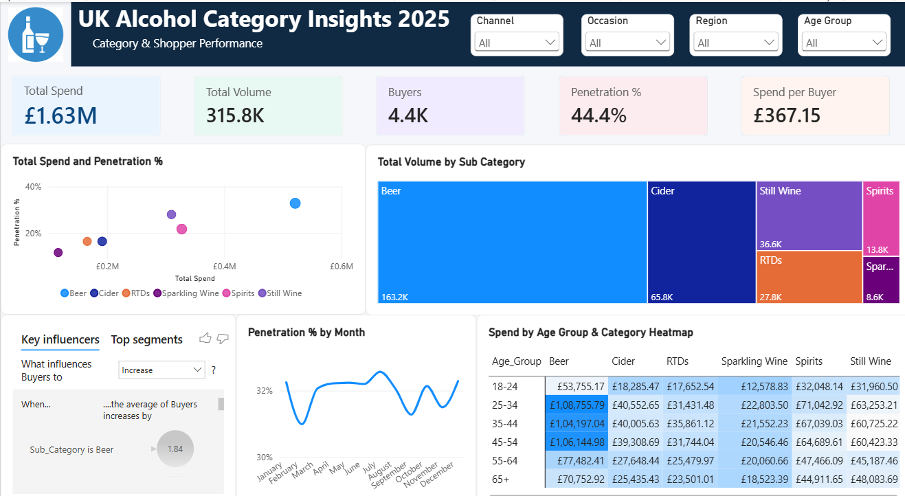

Shopper Insights Dashboard
THE PROBLEM
FMCG and CPG teams tracking the UK alcohol category often struggle to see spend, volume and buyer penetration in one place. Category, occasion, region and age group cuts typically sit in separate reports, making it hard to quickly identify which segments are driving performance and which shopper groups are worth prioritising.
SOLUTION
I built an interactive Power BI dashboard, "UK Alcohol Category Insights 2025", that brings together Total Spend, Total Volume, Buyers, Penetration % and Spend per Buyer in a single view. Users can filter by Channel, Occasion, Region and Age Group, compare sub-categories like Beer, Cider, RTDs, Spirits and Wine, and drill into monthly penetration trends and an age-by-category spend heatmap.
APPROACH
Starting from shopper panel data, I modelled spend, volume and buyer metrics into a single category tracking framework, then designed the report around the questions category and shopper marketing teams actually ask: which sub-categories drive the most value, how penetration shifts month to month, and which age groups over-index on spend. Key influencers and top segments were added to surface what most moves buyer behaviour.
TOOLS USED
- Power BI
- DAX
- Shopper Panel Data
- Category Analytics
- Consumer Insights
This dashboard is fully interactive in Power BI, but live viewing requires an organisational Power BI account and isn't accessible on the public web. Download the file below and open it in Power BI Desktop to explore it interactively.
Download Power BI File